ANALYSIS OF TE10 MODE PROPAGATION IN AN AIR-FILLED VS. A DIELECTRICALLY-FILLED (ALUMINA) RECTANGULAR WAVEGUIDE
Project Completion Date: November 9, 2025
Download Full Report (PDF)Domain
High-Frequency (RF) Engineering, Microwave Theory, Electromagnetics
Skills Implemented
HFSS Simulation, 3D EM Modeling, S-Parameter Analysis, Cutoff Frequency Calculation, E-Field Visualization
Software Used
ANSYS Electronics (HFSS)
Objective
The goal was to conduct a quantitative comparison of $TE_{10}$ mode propagation in a standard WR-90 waveguide vs. one 100% filled with 96% Alumina. This analysis, performed using the Ansys HFSS solver, aimed to validate electromagnetic theory and quantify the trade-offs of dielectric loading for RF applications.
Project Milestones
- Modeled and validated both air-filled and alumina-filled configurations against their theoretical formulas.
- Determined and compared the $TE_{10}$ cutoff frequency for each guide.
- Visualized and analyzed the E-field and H-field concentration differences.
- Compared the guided wavelength at 10 GHz.
- Quantified the insertion loss (attenuation) from the alumina's loss tangent.
Results (Simulation Gallery)
Air-Filled Waveguide Results
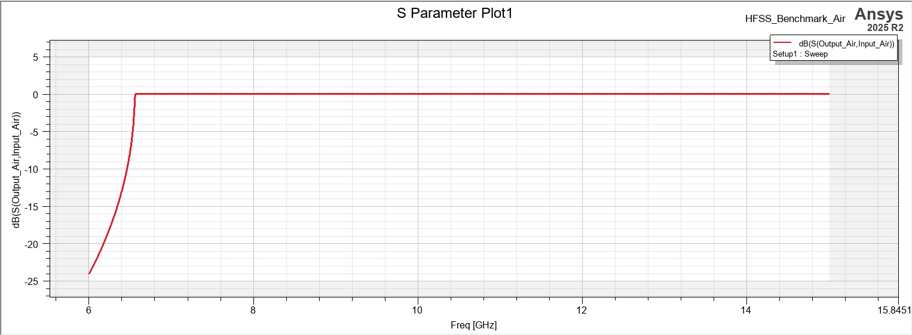


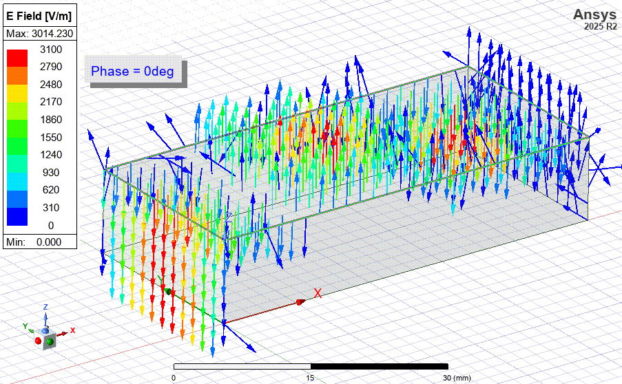
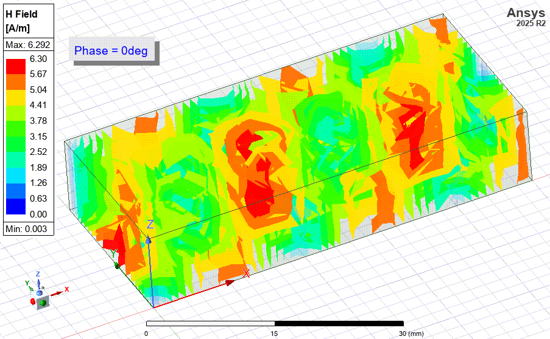
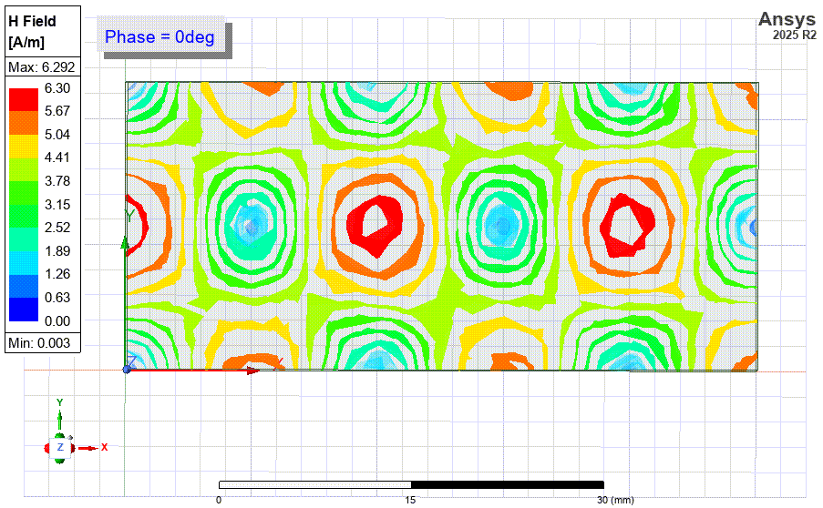
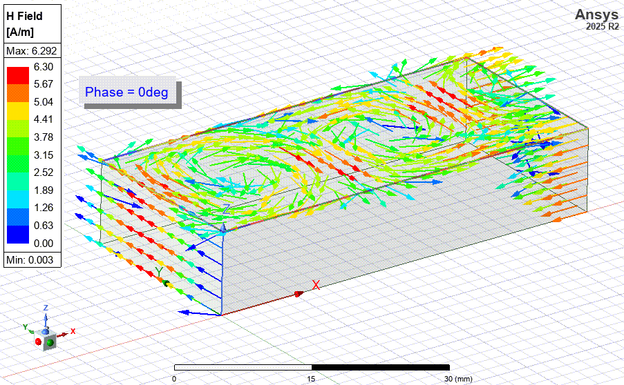
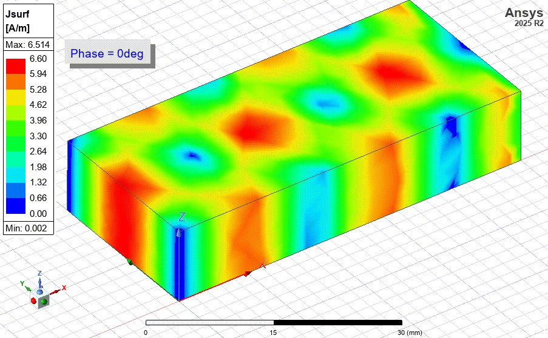
Dielectrically-Filled (Alumina) Waveguide Results

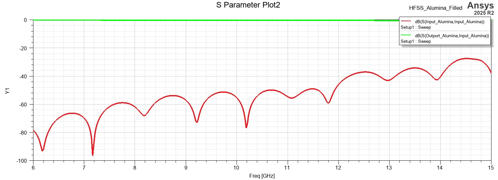
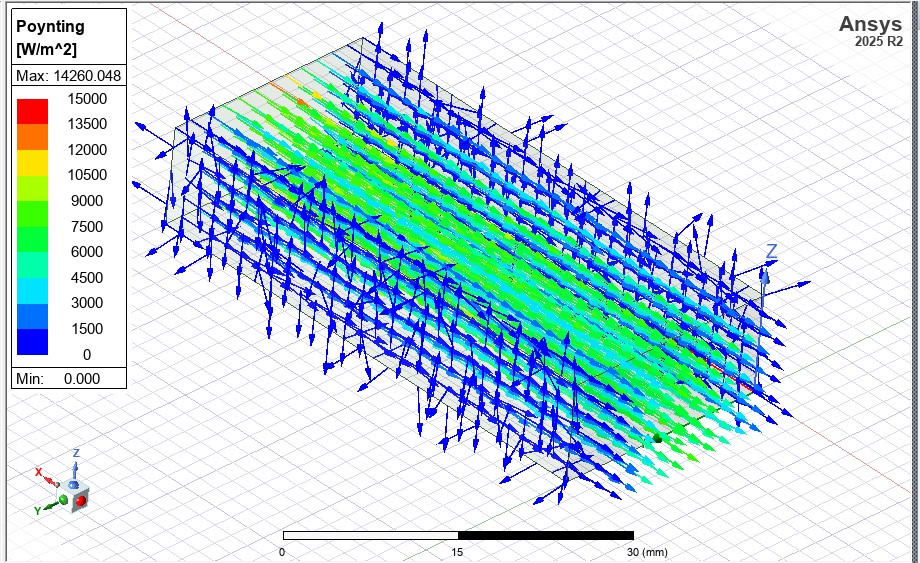
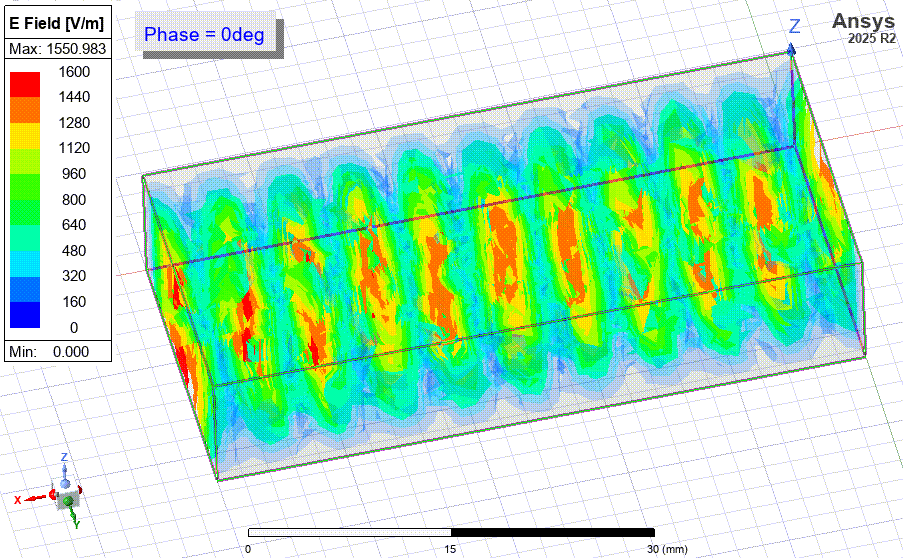
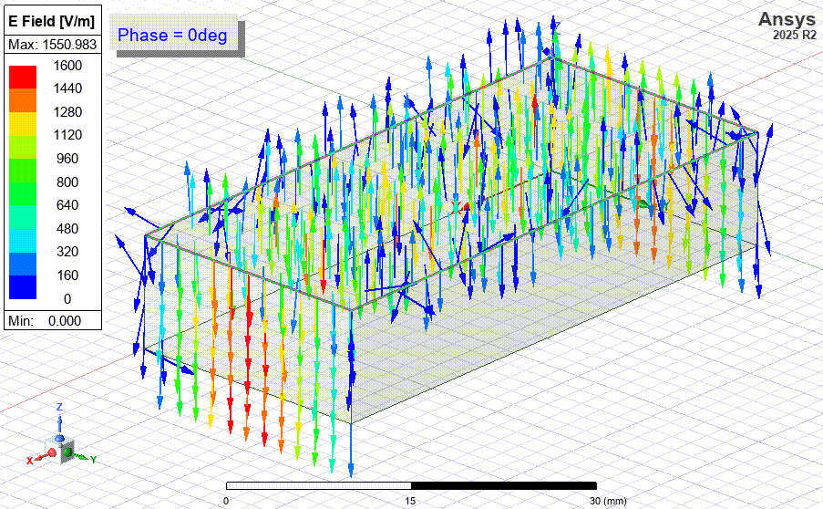

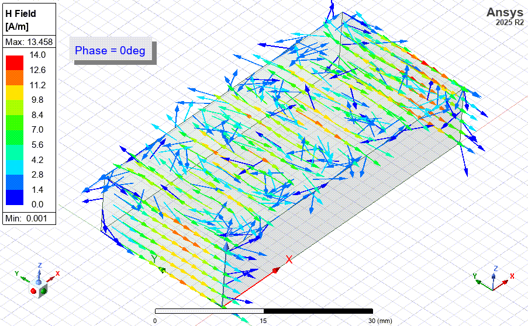
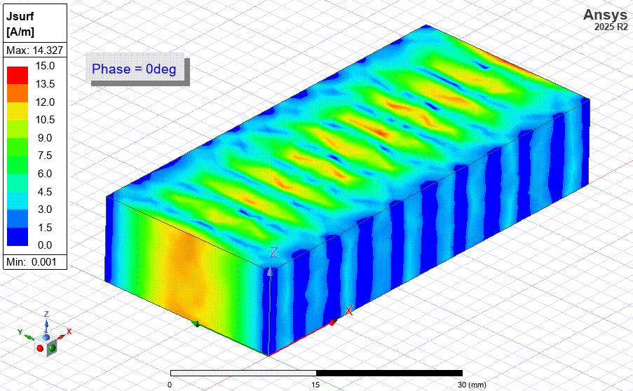
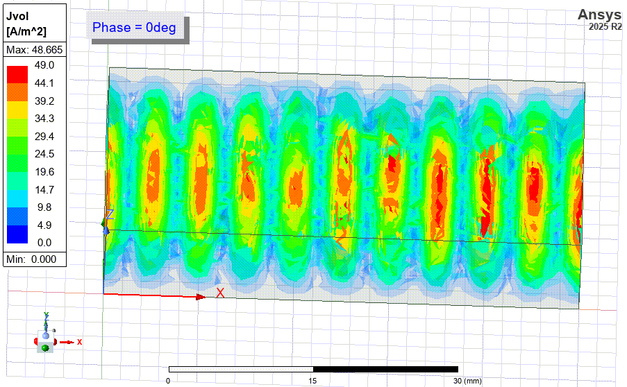
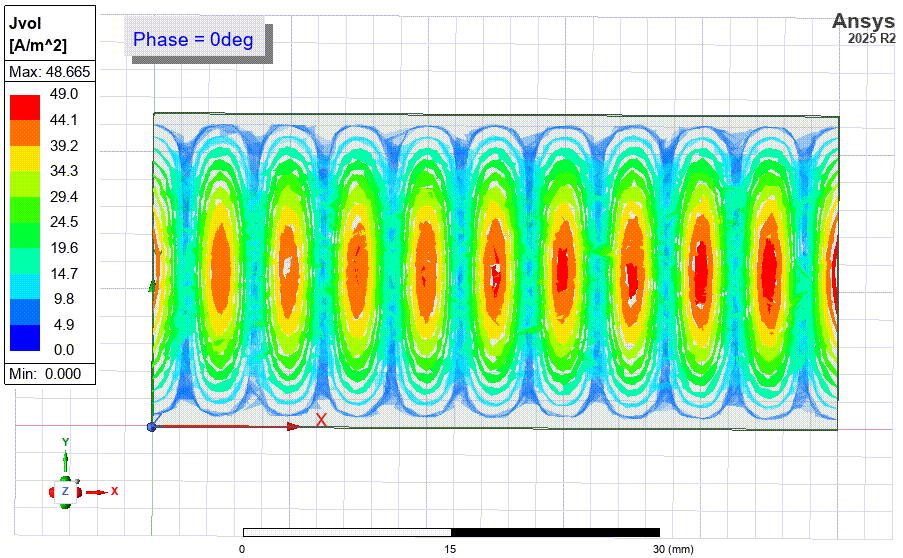
Conclusion
This study successfully met all project milestones. The key findings, which directly answer the objectives, are:
- Cutoff Frequency (Milestone 2): The alumina drastically lowered the cutoff frequency from 6.56 GHz to a value which aligns with the theoretical prediction of 2.19 GHz.
- Field Concentration (Milestone 3): The E-field and H-field visualizations confirmed that the fields were highly concentrated within the high-permittivity alumina, resulting in higher field magnitudes for the same 1W input power.
- Guided Wavelength (Milestone 4): The high permittivity "compressed" the guided wavelength.
- Insertion Loss (Milestone 5): The alumina's non-zero loss tangent introduced measurable, frequency-dependent attenuation. This dielectric loss was clearly quantified, showing a loss of ~0.26 dB to ~0.72 dB, which was absent in the ideal air model.
Future Work
This study established a strong baseline for the two extreme cases (0% and 100% dielectric fill). A logical and valuable next step would be to investigate the original objective of a **partially-filled waveguide**. Such a study would involve simulating the guide with a dielectric slab of varying thickness or position. The goal would be to analyze the trade-offs and find a potential "sweet spot" that achieves significant miniaturization and wavelength compression while minimizing the insertion loss introduced by the dielectric.